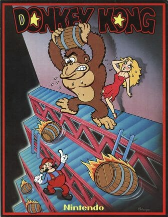
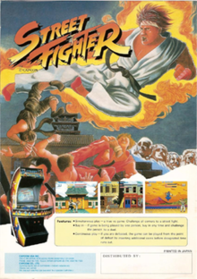

Juegos Clasicos
A propósito del reciente lanzamiento del emulador de juegos de arcade clásicos MAME para el navegador Chrome, quisimos darnos el gusto de repasar 4 títulos inolvidables de los salones de máquinas recreativas. Y con ello, homenajear a estos personajes hechos con pixels del tamaño de un puño que protagonizaron capítulos inolvidables de nuestra infancia. Sí, estos arcades come-fichas nos hicieron gastar buenas cantidades de dinero, y sólo nos dieron a cambio horas y horas de diversión. Creo que ningún negocio a posteriori fue tan beneficioso. Por jugabilidad, por influencia, por originalidad, por haber liderado rankings y aunado buenas críticas en su momento, aquí están los títulos más relevantes de todos los tiempos. Bienvenida sea la nostalgia... y el debate. ¿Cuál sumarías, cuál sacarías? Al final una galería con imágenes promocionales con la mayoría de estas máquinas chirriantes. A no perdérselo.

Donkey Kong (1981)
Como dijimos, en el primer arcade de "Donkey Kong", Mario se llamaba Jumpman y es un carpintero, no un fontanero. Sería, con el tiempo el Mickey Mouse de Nintendo, sí, sí, con la gorrita, el bigote, y ese carisma subterráneo que pueden tener un puñado de pixels saltando un barrilete. Mario tenía que salvar a Paulina de las garras del gorila, que toma su nombre de un juego de palabras de origen japonés: donkey vendría a ser algo así como estúpido. Otra anécdota dice que el título original era Monkey Kong, pero que alguien leyó mal un primer fax interno y rebautizó el proyecto.

Frogger (1981)
Debe ser una de las ideas más simples en las historias de los videojuegos: una ranita que debe cruzar la calle y el río hasta llegar a su casa. Recuerdo haber jugado "Frogger" por primera vez en una Texas Instruments 99. Aunque no generaba la adrenalina de las guerras entre navecitas espaciales, tenía lo suyo. El origen del anfibio cruzador de calles es muy serio. El titulo original llevaba por nombre “Highway Crossing Frog” y fue una artera copia de “Freeway”, un experimiento desarrollado en 1971 por el departamento de psicología por la Universidad de Washington en una minicomputadora IMLAC PDS-1, en el contexto de un estudio de la memoria humana a corto plazo. Cuenta la leyenda que, al parecer, alguien de Konami lo vio y comercializó. Algo que nunca pasó, ni volverá a pasar, en la historia de la tecnología...

Street Fighter (1987)
El verdadero golazo de Capcom (que significa computadoras en cápsulas) fue el titulo de 1991, "Street Fighter II", un must de todo jugón que se precie de tal. Fundacional en su especie, este título fue el primero en sumar combos de golpes, los cuales se iban descubriendo progresivamente y según el personaje elegido. (en el primer Street Fighter sólo se podía elegir a Ryu o Ken y luchar contra un rival controlado por el CPU; un embole, diríamos en mi país). ¿Un detalle? El juego en japón tenía un luchador que era el favorito de todos Mike Bison, un homenaje al peso pesado Mike Tyson. La filial en Estados Unidos presionó a los nipones a que cambiaran el nombre del peleador, por el de Balrog, atentos a los problemas legales que podían surgir allí.

Pac-Man (1980)
¿Qué podemos decir sobre Pac-Man que no se haya dicho? Nada. Tal vez, datos inútiles como que la máxima puntuación posible en una partida del come-cocos es 3,333,360 puntos. O tal vez, que no fue sólo el mejor juego de todos los tiempos, si no que realmente influyó a toda una generación. ¿O no? "Los videojuegos no tienen ninguna influencia sobre los niños. Quiero decir, si el Pac-Man hubiese influenciado a nuestra generación, estaríamos todos corriendo en salas oscuras, masticando píldoras mágicas y escuchando músicas electrónicas repetitivas" (del cómico Kristian Wilson, falsamente atribuido a un ejecutivo de Nintendo) Desde que fue lanzado por Namco (a su olvidado autor, hoy docente Toru Iwatani, nuestras reverencias) fue un verdadero éxito. Llegó a tener el Récord Guiness del videojuego de arcade más exitoso de todos los tiempos con un total de 293.822 máquinas vendidas de 1981 a 1987 y acabó con el dominio de Space Invaders. La mayoría de nosotros sólo vimos las maquinitas de Ms. Pac Man (1981); seguramente en algún tugurio de tu barrio todavía hay alguna de estas chirriando una musiquita maravillosamente insoportable.